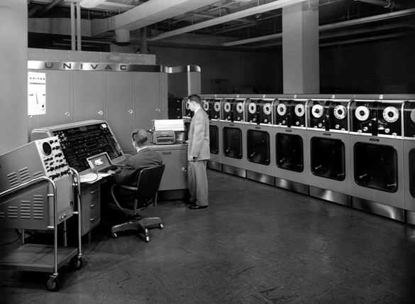
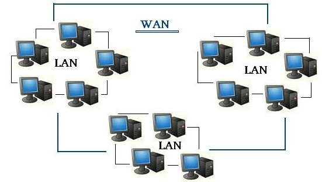
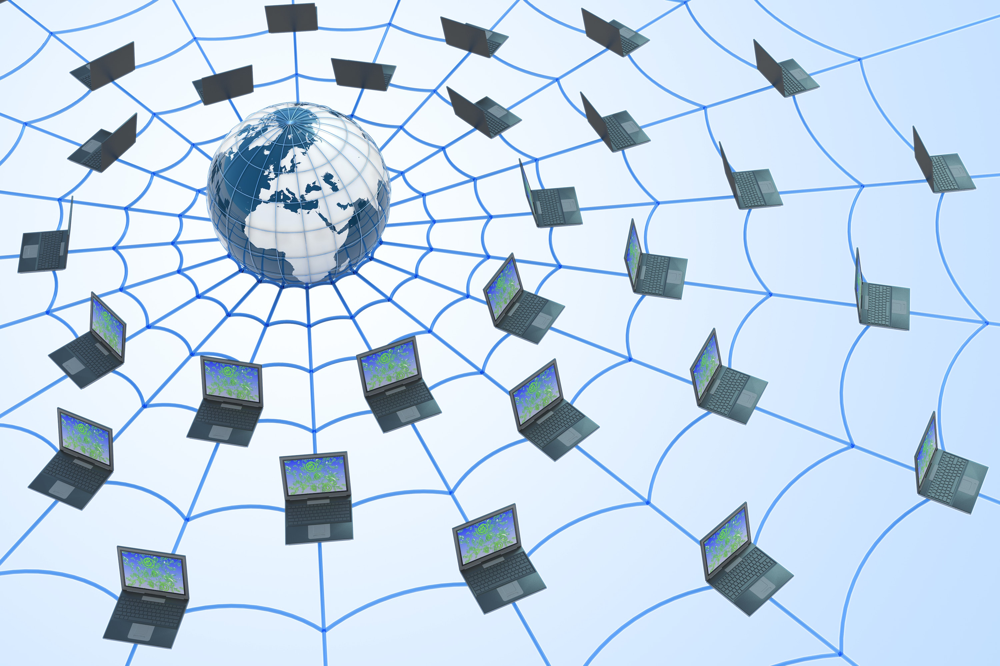

История
Появление компьютерных сетей
С древних времён люди искали способы передачи информации: наскальные рисунки, письмена, устная речь. С появлением компьютеров эта задача стала ещё актуальнее, ведь эти устройства создавались именно для обработки данных. Однако первые компьютеры 1950-х годов, такие как мейнфреймы, были далеки от современных гаджетов. Они занимали целые комнаты и использовались учёными для расчётов в физике, экономике или военных проектах.
 ИсточникМейнфреймы 1950-х не имели экранов или клавиатур. Программисты писали код на перфокартах — бумажных карточках с отверстиями, которые считывались машиной. Эти карточки собирали в «пакеты» и передавали операторам, которые загружали их в компьютер. Результаты расчётов приходилось ждать часами, а ошибка в одной карточке могла остановить всю систему на сутки. Такой подход был медленным и неэффективным. Однако уже в 1960-х, с удешевлением электроники, появились многотерминальные системы. Каждый пользователь получал терминал — устройство с монитором и клавиатурой, подключённое к мейнфрейму. Это создавало иллюзию персонального компьютера, хотя все данные обрабатывались централизованно.
Потребность обмениваться информацией между удалёнными локациями привела к созданию глобальных сетей (WAN). В 1960-х терминалы стали подключать к мейнфреймам через телефонные линии с помощью модемов. Так данные могли передаваться на сотни километров. Но настоящий прорыв произошёл с появлением ARPANET — сети, разработанной в 1969 году для Министерства обороны США. Она использовала пакетную коммутацию, где информация делилась на «пакеты», что повышало надёжность передачи, особенно в условиях угрозы ядерной войны.
 ИсточникВ 1970-х, когда персональные компьютеры стали доступнее, возникла идея объединять их в локальные сети (LAN). Проблема была в отсутствии единых стандартов: компьютеры разных производителей не «понимали» друг друга. В середине 1980-х ситуацию изменили технологии вроде Ethernet, Token Ring и Arcnet. Ethernet, разработанный Робертом Меткалфом, стал особенно популярен благодаря простоте и дешевизне. Он позволял соединять компьютеры через коаксиальный кабель, а позже — витую пару и оптоволокно. К 1990-м Ethernet эволюционировал в Fast Ethernet (100 Мбит/с) и Gigabit Ethernet (1000 Мбит/с), став основой большинства локальных сетей.
ARPANET стала прообразом интернета, но настоящий скачок произошёл после внедрения протокола TCP/IP в 1983 году. Этот стандарт позволил объединять разнородные сети в единое целое. В 1989 году Тим Бернерс-Ли предложил концепцию Всемирной паутины (WWW), создав HTTP, HTML и первый веб-браузер. К 1990-м интернет вышел за рамки научных институтов: открылись домены .com, появились браузеры вроде Netscape Navigator, а бизнес начал использовать Сеть для рекламы и продаж.
 ИсточникС развитием технологий границы между локальными и глобальными сетями стёрлись. Оптоволокно позволило передавать данные на огромные расстояния почти без потерь, а протоколы вроде IP стали универсальным языком для всех устройств. Телефонные сети переняли интернет-технологии (VoIP, 4G), а компьютерные сети интегрировали мультимедиа, голос и видео через мультисервисные платформы (NGN). Сегодня сети — это не просто кабели и серверы. Wi-Fi, 5G, облачные вычисления и интернет вещей (IoT) превратили их в «нервную систему» цифрового мира. И хотя первые мейнфреймы кажутся реликтами, именно они заложили основу для технологий, которые теперь позволяют заказать пиццу одним кликом — даже если реклама надоела
Компьютерные сети прошли путь от громоздких мейнфреймов до умных городов, где миллиарды устройств обмениваются данными в реальном времени. И если раньше главной задачей было «заставить компьютеры говорить», то сегодня вызовы иные: кибербезопасность, скорость, доступность. Но суть остаётся той же — соединять людей и идеи, как это делали наскальные рисунки тысячи лет назад.